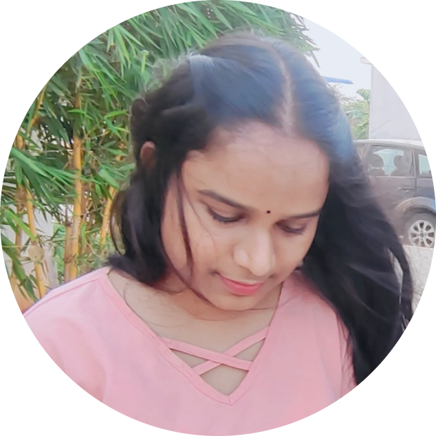

|  | Haritha BandaruTech Enthusiast. I am an energetic and ambitious CSE student with a passion for developing cutting-edge technologies, eager to leverage skills and experience in a challenging role as a software developer. Contact me |
Amaravati, Andhra Pradesh
Computer Science and Engineering (CSE)
CGPA : 8.92(till 7th sem)
Vijayawada, Andhra Pradesh
Board Intermediate Education
CGPA : 9.94
Repalle, Andhra Pradesh
Board Of Secondary Education
CGPA : 10
| Title | Description |
|---|---|
| Project 1: Image classification | About the project: Research on the image
classification using trained data types
using Machine learning. Tools Used: Python |
| Project 2: Inter-process communication using pipes | About the project: Implemented inter-process
communication using single pipe with
two different files. Tools Used: C |
| Project 3: Portfolio website | About the project: Simple project on the single
page responsive static website. Tools Used: HTML, CSS,javascript, bootstrap and Figma |
| project 4: Facial expression recoginsation | Tt is a computer vision project that helps to find
the facial expressions. Tools used: python |
| project 5: social media website. | It is website where people can post and save the
photos. Technologies used: reactjs and sanity. |
| python | ⭐⭐⭐⭐ | C-language | ⭐⭐⭐ |
| Fullstack development | ⭐⭐⭐⭐ | Figma | ⭐⭐⭐⭐ |